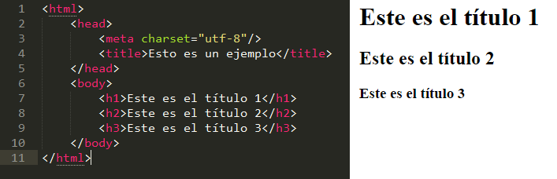
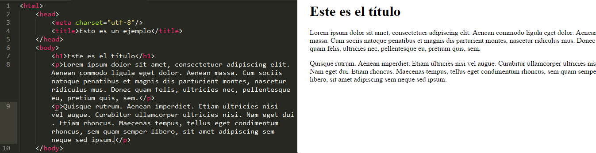

7 Conceptos básicos de HTML
Se trata de un lenguaje de programación que se utiliza para el desarrollo de páginas web. Las siglas HTML corresponden a HyperText Markup Language («lenguaje de marcas de hipertexto». Este lenguaje permite estructurar el texto de los documentos y se basa en etiquetas que determinan cómo debe mostrarse el texto y los atributos que pueden tomar dichas etiquetas.
1. Las partes de la página web
Toda página web se divide en dos partes principales: cabecera y el cuerpo (head y body).
La cabecera es la parte «no visible» de la página web. Esto significa que todo lo que se indique ahí no aparecerá en la página como tal, pero sin embargo es una parte importantísima: ahí se incluyen las etiquetas meta que se usan para describir la página (imprescindibles para el posicionamiento SEO), el título de la página, el idioma, información relacionada con hojas de estilo, etc.
En el body se introducen todas las etiquetas que nos permiten dar formato al documento.
Como esta guía está destinada a pequeñas modificaciones en el cuerpo de la página web, describiré las etiquetas del body y no mencionaré nada más sobre la cabecera. Pero si necesitas ahondar en el tema o en más lenguajes a parte de html, te dejo esta página web, que es excelente para pequeñas consultas que necesites.
2. Los títulos
Las etiquetas que definen los títulos se pueden utilizar para marcar el título y/o los diferentes apartados que forman el documento, o simplemente para resaltar cualquier texto. Existen seis tipos de títulos, que van de la etiqueta número 1 (la más grande) a la 6 (la más pequeña). Esto también es muy importantes para el posicionamiento en buscadores, ya que les estás indicando que lo que está entre estas etiquetas es importante y característico de tu web.

3. Los párrafos
Los párrafos se delimitan con las etiquetas <p>…</p>. Un párrafo es un bloque de texto que se muestra separado del resto por un salto de línea. Si dentro del párrafo queremos hacer un salto, pero que se siga considerando un único párrafo (dar un intro en word) escribiríamos la etiqueta <br>.
Sin embargo, si quieres escribir de manera libre y que te detecte los saltos de línea, solo tienes que escribir dentro de la etiqueta <p>…</p>. El único inconveniente de esto es que si copias el texto de otro documento y tiene además listas, títulos, negritas… es posible que no te lo detecte todo.

Si deseas seguir leyendo los otros conceptos (Las listas, las tablas, los enlaces y los atributos y estilos), te invito a visitar la pagina web Leonorcanuelo